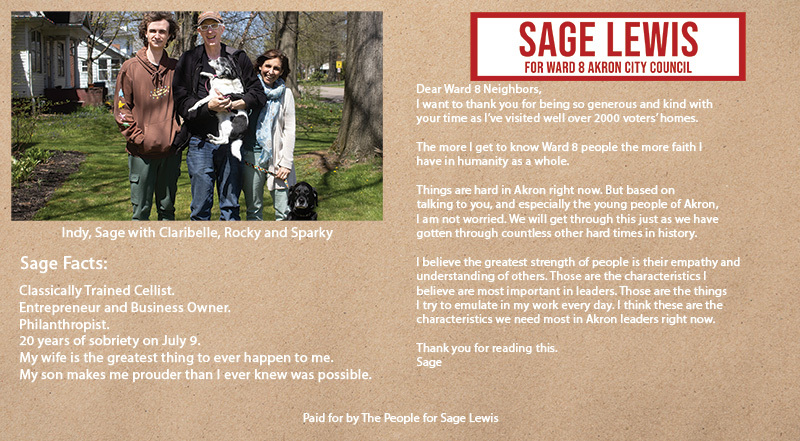

Timeline photos
I am putting out one last mailer. It will go to 1800 households and cost $815.
The picture here is the front of the postcard.
A family member of a person who has been helping me along the way saw this postcard and just kept saying, "I can't believe Mrs. Lewis is so pretty. I can't believe she is so pretty."
Yeah buddy, you and me both. I don't know what she was thinking.
The postcard is almost paid for. But I'd love it if you'd be willing to help fund the rest of it so the pretty Mrs. Lewis doesn't have to cover the loss. I mean, that would just not be right.
You can donate here:
https://secure.actblue.com/donate/postcardsforsage2